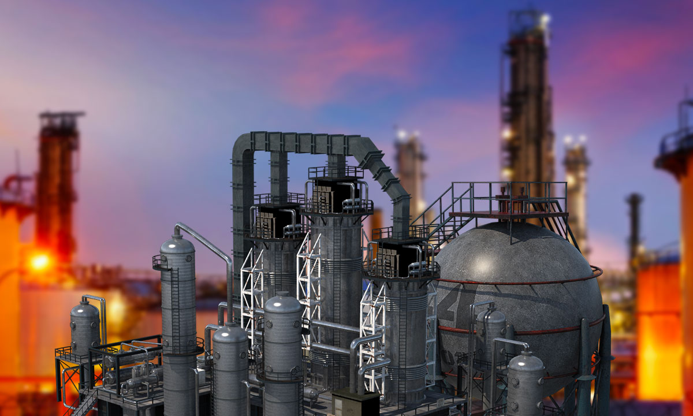
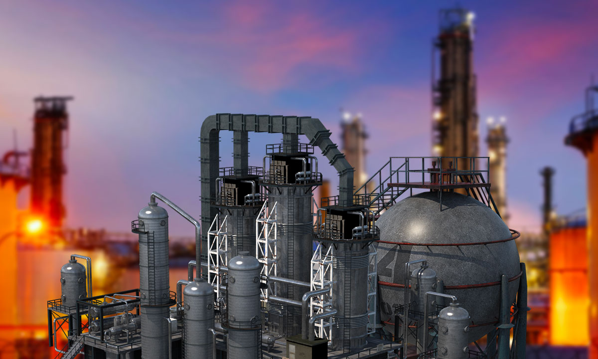
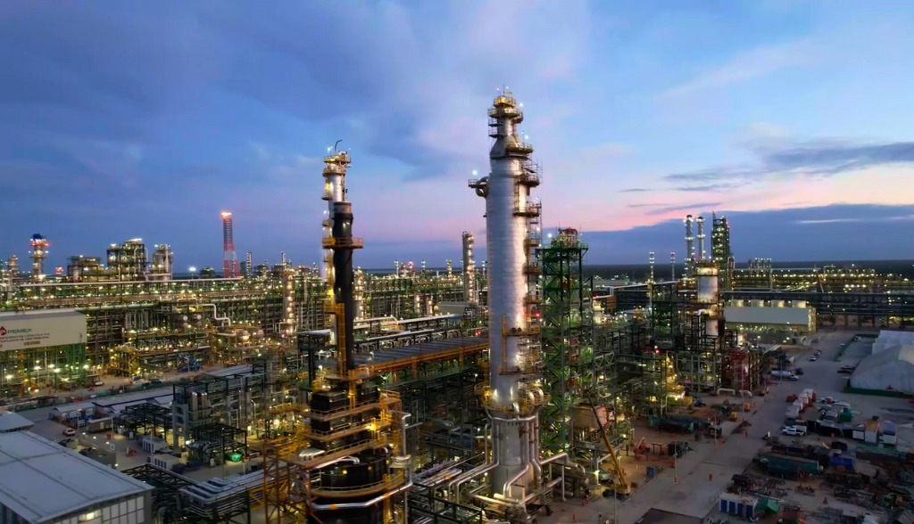
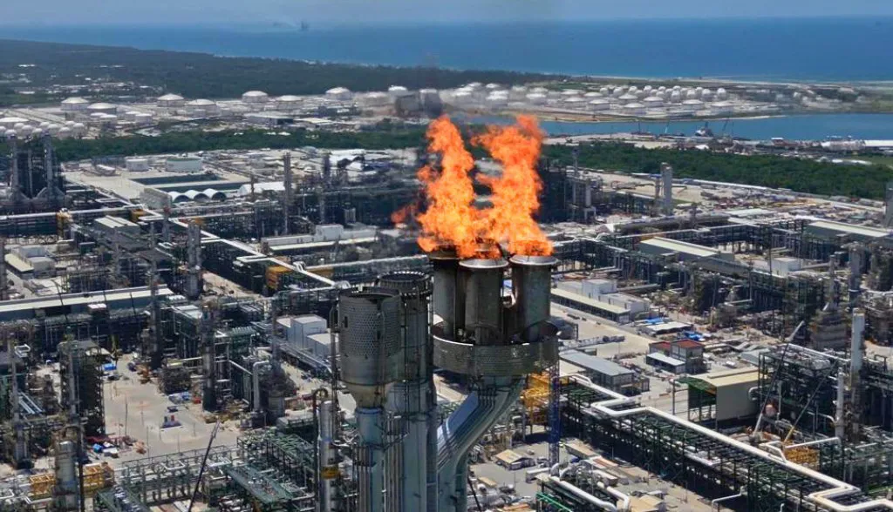
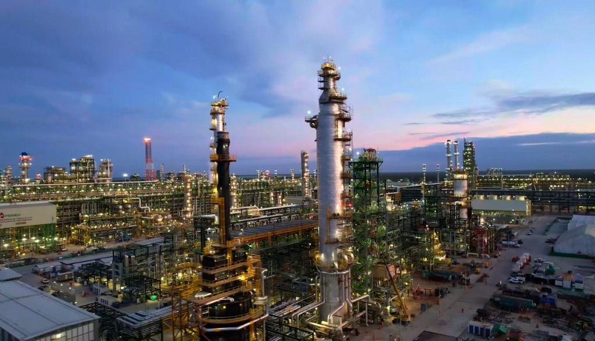
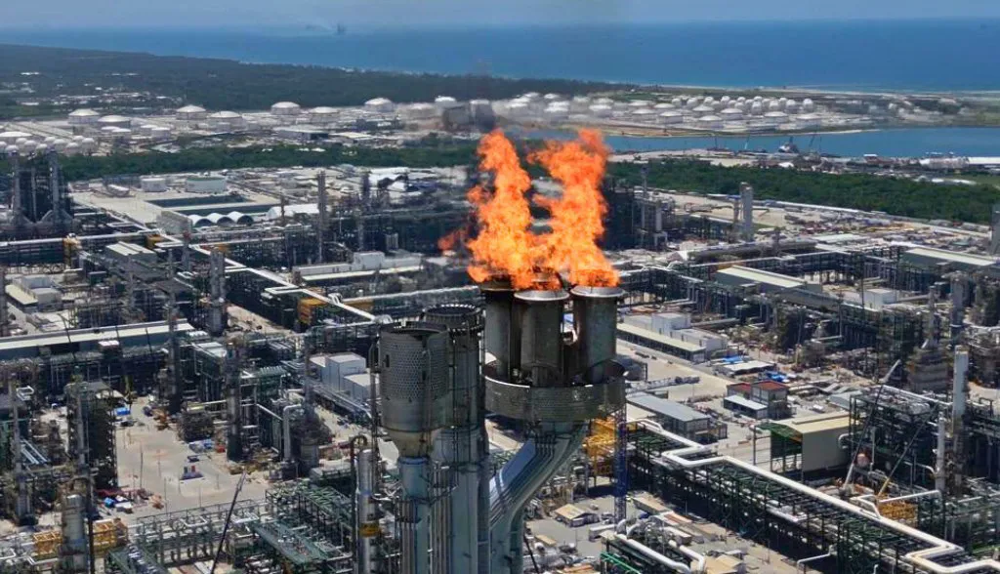
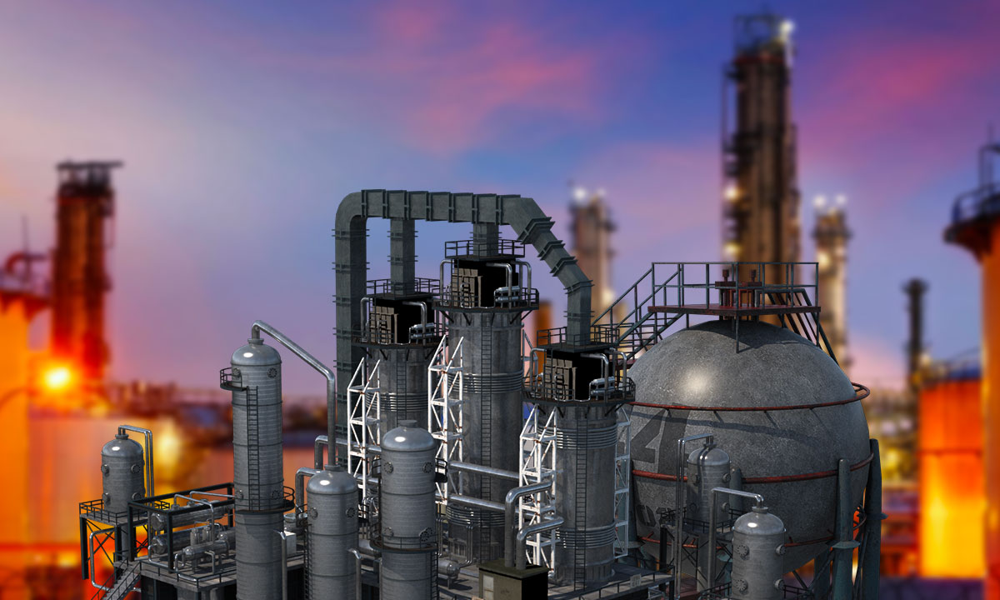
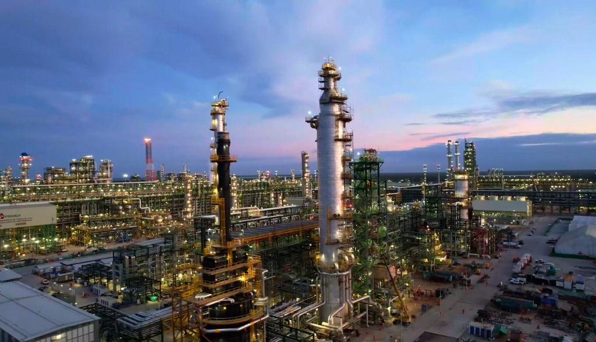
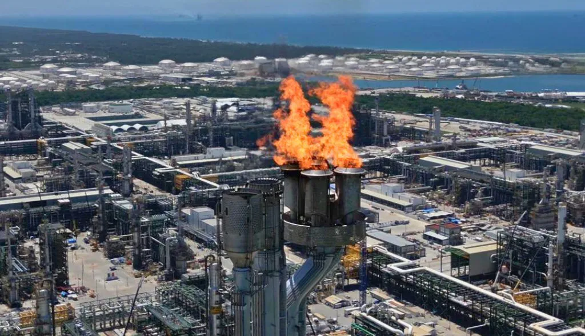

Galería de Imágenes
.jpg)
 


 




La Refinería Olmeca, conocida como Dos Bocas, es uno de los proyectos más ambiciosos del sector energético en México. Ubicada en el municipio de Paraíso, Tabasco, esta refinería tiene como objetivo aumentar la producción de combustibles y reducir la dependencia del país en la importación de derivados del petróleo.
Dos Bocas representa una pieza clave en la estrategia nacional para alcanzar la autosuficiencia energética. Con una capacidad de producción estimada de 340,000 barriles diarios, la refinería procesará petróleo crudo para producir gasolina, diésel, y otros productos refinados.
La construcción de esta refinería ha generado miles de empleos directos e indirectos, fortaleciendo la economía local. Además, impulsa la inversión en infraestructura y promueve el desarrollo sostenible en la región.
Dos Bocas cuenta con tecnología de punta para garantizar la eficiencia y minimizar el impacto ambiental. La refinería también incluye sistemas avanzados de control de emisiones y manejo de residuos.


